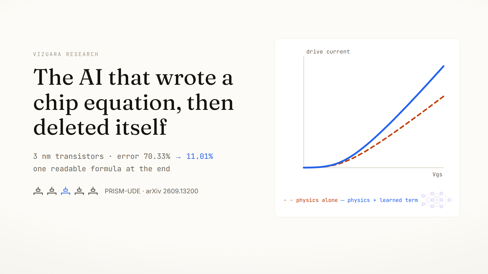

Every chip is rehearsed inside a simulator that stands each
transistor in for a small hand-written equation. At 3 nanometers those
equations miss by 70 percent, and the obvious fix, a neural network, crashes
the simulator. We kept the physics, let a small network learn only what the
physics misses, then deleted the network: symbolic regression rewrote it as
one readable formula that runs inside SPICE.
Before a chip is manufactured, it is built millions of times in software.
A circuit simulator, almost always some descendant of SPICE, assembles the
design and solves for every voltage and current, over and over, until the
designers trust the timing and the power. But the simulator does not solve
quantum mechanics. Each of the billions of transistors is stood in for by a
compact model: a short system of closed-form equations, written and
calibrated by hand, that answers one question. Given the voltages on the
terminals, how much current flows?
Compact models have a harder job than just being accurate. The simulator
finds each operating point with Newton-Raphson iteration, a numerical method
that follows derivatives downhill to a solution. That method inherits every
mathematical flaw in the model. A kink in a curve, a slope that jumps, a
current that wiggles where it should be flat: any of these can send the
iteration diverging, and the whole simulation fails to converge. So a
transistor equation has to be smooth to arbitrarily many derivatives,
monotone where physics says so, and exactly zero where physics says zero.
It is applied mathematics under industrial discipline.
At 3 nm the equations run out
For fifty years, physicists kept those equations current by hand, and it
worked because transistors were big enough to obey textbook transport. They
no longer are. In the 3 nanometer generation the drawn gate length of the
FinFET studied here is 15 nanometers. At that scale electrons can cross the
channel with few or no scattering events, so current is partly ballistic.
Vertical confinement splits the electron energy levels, which shifts the
threshold voltage, the gate voltage where the device turns on. The drain
terminal reaches electrostatically under the channel and lowers the barrier
(drain-induced barrier lowering, or DIBL), so the threshold moves with the
drain bias too. None of this has a simple classical expression.
The industry standard, BSIM-CMG, holds the line by adding parameters:
hundreds of coefficients per process, extracted by teams of specialists
through multi-variable optimization against reference data, then re-extracted
for the next process. The equations still converge beautifully. They simply
need an army to keep them honest, and each new node makes the army's job
harder.
15 nm
drawn gate length of the 3 nm FinFET modeled here
7 decades
range of drain current in one device, 10-10 to 10-3 amperes
100s
of hand-tuned parameters in a production BSIM model card
The obvious fix crashes the solver
The modern reflex is to skip the physics: train a neural network on
measured or simulated current-voltage data and use it as the model. It fits
the training data almost perfectly. It is also, for this job, close to
useless, and the paper's own ablation shows why with unusual clarity.
An unconstrained two-hidden-layer network trained on the same data
produced a held-out mean relative error above 20 million percent, because a
plain mean-squared-error fit treats the subthreshold decades, the region
between 10-12 and 10-9 amperes that sets a chip's
standby power, as indistinguishable from zero. Worse, at zero drain bias,
where a transistor must carry exactly no current, the network invented
38.6 milliamps out of nothing. A ghost current like that is not a rounding
error; inside a solver it is a hard physical contradiction, and localized
derivative anomalies of the same family are exactly what makes Newton-Raphson
iteration stagnate or diverge.
The zero-bias test that black boxes fail. Both models are
asked for the current at Vds = 0, where the true answer is exactly
zero. The physics scaffold is built so its current is pinned to zero there
no matter what; the unconstrained network reports 38.6 mA, and the solver's
iteration ticker below it diverges. Numbers from ablation A2 of the paper.
Keep the physics, learn the gap
PRISM-UDE inverts the trade. It keeps the classical transport physics as
the rigid skeleton of the model, and embeds a small neural network
inside that skeleton, allowed to learn only the piece the physics
misses. The construction is called a universal differential equation, or
UDE: a known differential system in which one hard-to-specify term is
replaced by a learnable function, while everything else stays analytical.
Concretely, the drain current keeps its drift-diffusion form: current is
width times channel charge times carrier mobility times electric field. The
charge, the field, and the threshold behavior stay classical (the
appendix builds each one from scratch). Only the
mobility, the term that says how easily carriers move and where all the
strange 3 nm transport hides, becomes a sum: the classical Caughey-Thomas
value plus a learned correction.
The scaffold is not decoration. Because the charge term goes to zero at
zero drain bias, the current is exactly zero there for any value the network
outputs. Because every function in the scaffold, including the network's own
tanh activations, is smooth to all orders, the solver's derivatives are
always defined. The network is a five-input, two-hidden-layer, 64-unit
perceptron, about as small as neural networks get, precisely because it has
so little left to learn.
The scaffold enforces the physics no matter what the
network does; the network absorbs only the transport nobody has written
down. Then symbolic regression deletes the network.
The equation with a slot in it. The drift-diffusion
skeleton draws first: width, charge, mobility, field. Then the mobility
term opens and the network settles inside it as an additive correction.
The two badges that snap on are the guarantees the scaffold enforces before
training even begins: zero current at zero bias, and smoothness to every
derivative.
Trained in two stages, so the network cannot cheat
The training data is the MESD benchmark, a public library of
foundry-calibrated BSIM simulations. This work isolates its anonymized 3 nm
FinFET partition, called N3A: an NMOS device at gate length 15 nm, swept over
gate and drain voltages from 0 to 0.7 volts, temperatures from -40 to
125 Celsius, and one to sixteen parallel fins. That makes 175 independent
bias trajectories, split 140 for training and 35 held out.
Training happens in two stages, and the order is the point. In stage one
the network is frozen at zero and a particle swarm optimizer, a gradient-free
global search, fits only the five classical parameters: threshold voltage,
subthreshold ideality, DIBL coefficient, oxide capacitance, low-field
mobility. The extracted values are physically sensible for a 3 nm NMOS
device: a threshold of 0.189 volts, an ideality factor of 1.19, DIBL of
0.103 volts per volt, an oxide capacitance corresponding to about one
nanometer of equivalent oxide. Only after these are anchored does stage two
unlock the network (Adam for a thousand epochs, then L-BFGS for fine
convergence). Anchor first and the network cannot absorb textbook behavior;
it is forced to model only the residual.
One more choice matters as much as the architecture. The loss is computed
on the logarithm of the current, not the current itself, so that a factor of
two error at 10-10 amperes costs the optimizer exactly as much as
a factor of two at 10-3. Train the identical model with an
ordinary linear loss and the held-out error degrades from 11 percent to
160 percent: a 14.5 times penalty for weighting the decades wrong.
Six times closer, at every temperature
On the 35 held-out trajectories, the physics scaffold alone misses by
70.33 percent mean relative error. With the network inside, the error falls
to 11.01 percent. The distilled formula that eventually replaces the network
(next section) lands at 12.38 percent. Training and held-out errors track
within 0.6 points, which is what you expect when the residual being learned
is genuine systematic physics rather than memorized noise.
70.33%
held-out error, classical physics scaffold alone
11.01%
with the neural residual inside the scaffold
12.38%
with the network replaced by one formula
Held-out mean relative error across the paper's ablations.
The linear-loss variant (A3) and the physics-only baseline (A1) both fail in
different ways; the black-box MLP (A2) is off this chart by five orders of
magnitude and violates the zero-bias law outright. Hover any bar for the
exact value. Data: Tables 3 and 6.
What the learned residual changes. Drive current versus
gate voltage at Vds = 0.6 V and 25 C, computed live on this
page from the paper's own published equations and constants (Tables 2 and 8,
Eq. 26). The classical scaffold underestimates strong-inversion current; the
learned correction supplies the missing transport. This is the same
comparison the paper's Figure 3 makes against the reference data.
The result holds where compact models usually crack. Across the thermal
envelope, restricting evaluation to the extremes of the temperature grid
(0 and 125 Celsius) gives 6.57 percent error. Retraining on half the
trajectories changes the error by half a point, because the scaffold already
carries the macroscopic trends and the residual is genuinely low-dimensional.
And the subthreshold swing, the derivative quantity that sets off-state
leakage and is notoriously fragile in learned models, is reproduced to
within 1.4 millivolts per decade of the reference distribution.
Capacity is not the story either: shrinking the hidden width from 64 to
32 to 16 to 8 moves the error only from 11.01 to 14.11 percent. The
physics-informed structure, not network size, is doing the work.
Then delete the network
A trained network inside the model still costs matrix evaluations at
every solver step, and it still cannot be read. So the final act is
distillation: symbolic regression, an evolutionary search over algebraic
expressions (the PySR family of genetic programming), is pointed at the
trained correction and asked to breed a formula that matches it, using only
addition, multiplication, division, logarithms, exponentials, and square
roots.
The search returns a frontier: at each level of expression complexity,
the best loss found. Picking from a frontier needs a rule, and the paper's
rule is refreshingly plain: take the simplest expression whose loss is
within 5 percent of the best found anywhere. The complexity-11 candidate
misses that tolerance by 16 percent; the complexity-15 candidate makes it
at 3.65 percent, and is deployed.
The Pareto frontier of bred formulas, Table 7 verbatim.
Each point is the best expression found at that complexity; the y axis is
the residual loss against the trained network, on a log scale. Loss falls
steeply until complexity 9 and flattens after 15. The ringed point is the
deployed expression, the simplest within 5 percent of the best loss.
Hover for exact values.
The network becomes a sentence of algebra. The trained
64-unit correction dissolves and the deployed expression, Eq. 26 of the
paper, writes itself in its place: a smoothed magnitude of the classical
mobility, times a drain-field term that fades with temperature squared,
minus a gate-screening logarithm. The final model contains no neural
network at all.
where μCT is the classical Caughey-Thomas mobility and
θT is temperature relative to 300 K. Read term by term, it
is suggestive. The square root is a smoothed absolute value, there so the
correction stays differentiable through zero, with a floor four decades below
the mobility scale so it never distorts real values. The first bracketed term
grows with drain bias and dies off as temperature squared, the qualitative
signature you would expect if it captured quasi-ballistic velocity overshoot
being suppressed by phonon scattering at higher temperature. The logarithm
saturates with gate voltage, the shape of vertical-field screening and
quantum confinement effects on mobility.
The paper is explicit about the epistemics, and it is worth repeating:
these are candidate physical readings consistent with the fitted data, not
mechanisms identified by the regression. A fit to terminal currents cannot,
by itself, tell velocity overshoot apart from another mechanism with the
same functional shape. What the formula unambiguously is: compact,
C∞ smooth, and evaluable by any circuit simulator at
algebraic speed. You can also just play with it:
The deployed model, live. Both curves are computed in
your browser from the published constants: dashed, the classical scaffold;
solid, scaffold plus the distilled correction of Eq. 26. Drag the
temperature across its full trained range (-40 to 125 C) and watch the
correction shrink as θT-2 suppresses the
drain-field term; drag Vds down and the two curves close up, as
they must, since the correction is largely a high-field effect.
Back inside SPICE, it survives
A formula only counts as a compact model if a real simulator accepts it,
so the extracted expression was implemented in LTspice as a behavioral
source: a circuit element that evaluates an arbitrary algebraic expression
at every solver step. The implementation reproduces, verbatim, the same
three smooth guards used in training, including the
smooth_abs(x) = sqrt(x² + 1e-6)
operator that replaces every hard absolute value, so the deployed model and
the trained model are numerically identical.
Two tests follow. The DC family of curves sweeps drain voltage at seven
gate voltages: the model converges at every bias point, with smooth,
monotonically ordered curves and the expected linear-to-saturation knees.
Then the hard one: a transient simulation drives the gate with a square wave
with sub-nanosecond edges, forcing the solver to re-converge through the
full operating range at every timestep. It completes every switching cycle
with zero convergence failures and no numerical ringing.
One honest asterisk, which the paper itself insists on: those SPICE
sweeps run up to 1.2 volts, but the training data stops at 0.7. Beyond that,
the tests establish that the expression stays smooth, monotone, and
convergent, which is the property a solver needs; they say nothing about
quantitative accuracy out there, because no reference data exists in the
benchmark beyond 0.7 volts.
The deployed formula's DC family of curves, recomputed from
the published model. Drain current versus drain voltage at gate voltages
from 0.2 to 1.2 volts, the same sweep as the paper's SPICE Figure 6. Biases
up to 0.7 V are inside the trained envelope; the shaded region beyond is
the numerical-robustness zone, drawn here exactly because the paper is
careful to separate the two claims.
The film
The whole argument in three minutes, narrated over animations of the
paper's own numbers.

Where this sits in prior work
Every ingredient here has a lineage, and the paper is straightforward
about it. BSIM-CMG is the industry-standard compact model this work measures
itself against, and MESD, the benchmark it trains on, is itself generated by
foundry-calibrated BSIM engines. The MIT Virtual Source model showed long ago
that small, physical parameter sets can describe quasi-ballistic devices.
Neural surrogates for transistors have repeatedly hit sub-percent
interpolation error and repeatedly failed on physicality and solver
stability. Physics-informed neural networks constrain training with equation
residuals but still deploy a network at runtime. Universal differential
equations (Rackauckas et al.) formalized embedding a network inside known
dynamics, with successes from biochemistry to glacier flow, and Cranmer et
al. showed symbolic regression can extract clean algebra from trained
networks. The contribution here is the full closed loop for a 3 nm device:
scaffold, residual, two-stage training, distillation, and dynamic SPICE
validation, ending with no network in the deployed model.
Established before this work
BSIM-CMG models advanced nodes with hundreds of expert-extracted parameters.
Pure neural surrogates fit I-V data well but break physical laws and SPICE convergence.
UDEs learn residuals inside known physics in other scientific domains.
Symbolic regression can compress trained networks into algebra.
New here
The pipeline: MESD data to deployed symbolic expression, automated end to end for a 3 nm FinFET.
The discipline: two-stage optimization and a log-space loss that together keep the network honest across seven decades.
The receipt: a 6.4× error reduction that survives distillation to one formula within 1.4 points.
The proof of deployability: DC and sub-nanosecond transient SPICE runs with zero convergence failures.
What this does not show
The ground truth is simulation, not silicon. MESD is generated
by foundry-calibrated BSIM engines, so every accuracy number here is
fidelity to an industrial simulator's view of a 3 nm device, in a
controlled and reproducible setting. Real measured wafers add line-edge
roughness, dopant fluctuation, and instrument noise, and the paper flags
that regularizing symbolic regression against measurement noise is open
work.
Transport only. This models DC current-voltage behavior. A
production compact model also needs charge conservation and
transcapacitances for dynamic power and delay; that is designated future
work, and until then the expression pairs with a standard charge core.
One node, one device type. The constants of Eq. 26 are empirical
fits to the anonymized N3A partition, NMOS only. They are not universal
physical invariants, and porting to gate-all-around or CFET geometries
means changing the scaffold itself.
Accuracy claims stop at 0.7 volts. Beyond the benchmark's bias
ceiling the SPICE results demonstrate numerical robustness, not
correctness.
The physical readings of the formula are candidates. A fit to
terminal currents cannot uniquely identify microscopic mechanisms.
Appendix: a compact model from scratch
Everything above leans on one stack of classical device physics. Here it
is from the beginning, so a reader who has never opened a device textbook
can check what the scaffold actually assumes. Ten minutes here and Eq. 26
stops being a black box of its own.
Current is a product of four things
A MOSFET is a switch: a gate electrode over a thin channel between a
source and a drain. Its steady current obeys the drift-diffusion form,
current = width × charge × mobility × field. Width is
geometry (here, the number of parallel fins times the width of each fin).
Charge is how many carriers the gate has attracted into the channel.
Mobility is how easily they move. Field is how hard the drain pulls them.
Each factor gets one classical equation, and each equation is chosen as much
for smoothness as for physics.
Charge: one formula for off and on
Below threshold, channel charge grows exponentially with gate voltage;
above it, linearly. Older models stitched the two regimes together, and the
stitch was a notorious source of convergence trouble. The scaffold instead
uses a unified charge-sheet expression built around
softplus, the function ln(1 + ex), which is exponential
on one side, linear on the other, and infinitely smooth at the join. The
threshold voltage inside it is not a constant: it slides down with drain
bias at 0.103 volts per volt, which is the DIBL extraction from stage one,
and shifts with fin count.
Mobility: Caughey-Thomas saturation
At low field, carriers drift with a constant mobility. Push the field up
and their velocity saturates near 105 meters per second in
silicon. The Caughey-Thomas expression interpolates smoothly between the
two regimes, with a temperature exponent that captures why hot silicon
conducts worse (more lattice vibrations to scatter off). This is the
μCT that appears inside Eq. 26, and it is the term the learned
correction is added to.
Three guards that make it solver-proof
The forward model applies three smooth safeguards, and they are part of
the model, not cosmetic post-processing. The drain bias entering the charge
term is limited by a smooth minimum so charge cannot reverse sign beyond
pinch-off. The summed mobility passes through a softplus so it stays
positive even if the network output were to overwhelm the baseline. And the
current handed to the loss is floored at 10-15 amperes through a
smooth rectifier so the logarithm is always defined. All three are
C∞, and all three are reproduced verbatim in the SPICE
implementation.
The network, exactly
The learned correction is a multilayer perceptron with five normalized
inputs (gate voltage, drain voltage, temperature ratio, fin count, gate
length), two hidden layers of 64 tanh units, and one linear output, the
mobility correction. Tanh is chosen over the more fashionable ReLU for a
solver-driven reason: ReLU has a corner at zero, and a corner anywhere in
the model is a derivative discontinuity that Newton-Raphson will eventually
find. The whole network is a few thousand parameters, and after
distillation, it is zero parameters, because it is gone.
The whole pipeline in one pass. Data from the MESD 3 nm
partition flows into the physics scaffold; stage one anchors the classical
constants with a particle swarm; stage two trains the residual network
under the log-space loss; symbolic regression distills the network into
Eq. 26; SPICE validates the result under DC and transient stress. The
deployed artifact is the formula alone.
Reproduce it
The paper is open: arXiv
2609.13200 (also mirrored here as PDF).
The training data is the public MESD benchmark's N3A 3 nm FinFET partition:
175 bias trajectories, split 140 train and 35 held out, spanning 0 to 0.7
volts on both terminals, -40 to 125 Celsius, and fin counts of 1 to 16.
The recipe, in the order the paper runs it:
1 fit the scaffold PSO over {Vth0, m, DIBL, dVth_fin}, network frozen at zero
2 train the residual Adam 1e-3, 500 epochs; 1e-4, 500 more; then L-BFGS
loss mean squared error in log10(current), floor 1e-15 A
3 distill PySR-style genetic programming over {+,-,*,/,ln,exp,sqrt}
select simplest expression within 5% of best frontier loss
4 validate LTspice behavioral source, DC family + square-wave transient
Every number on this page is from the paper's tables
(Tables 2, 3, 5, 6, 7, 8), and every curve is recomputed in this page's own
JavaScript from the published equations and constants, so the figures can be
audited against the PDF line by line. Authors: Pranavanath Balamurali
(UT Austin), Prathamesh Dinesh Joshi, Raj Abhijit Dandekar, Rajat Dandekar,
Sreedath Panat (Vizuara AI Labs).